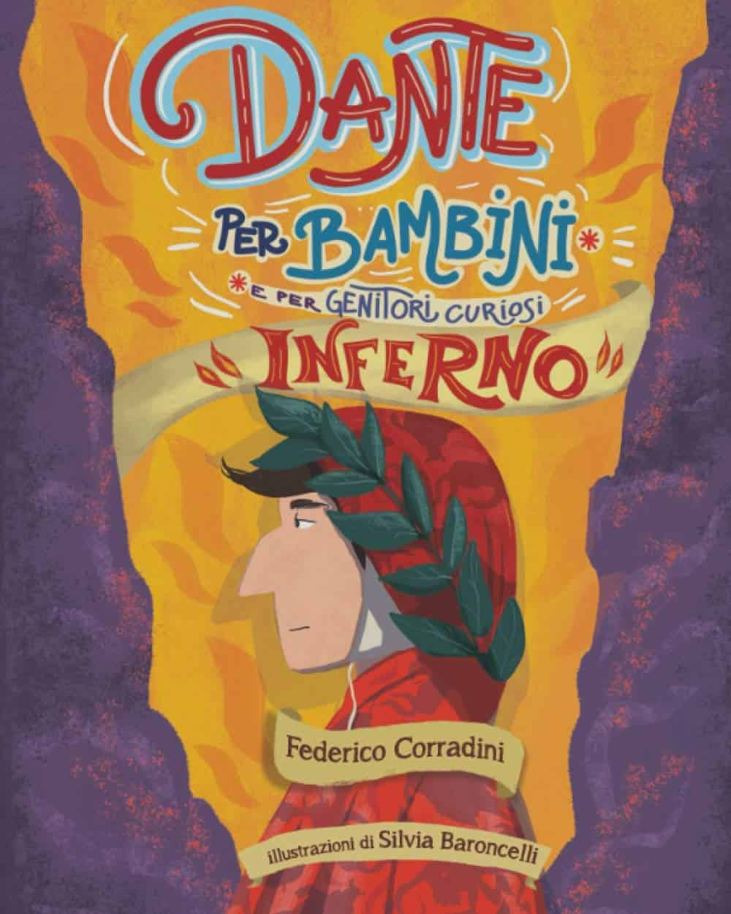
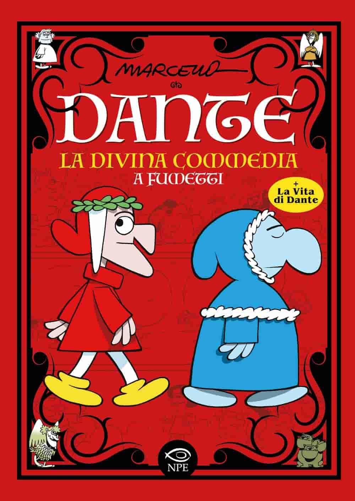
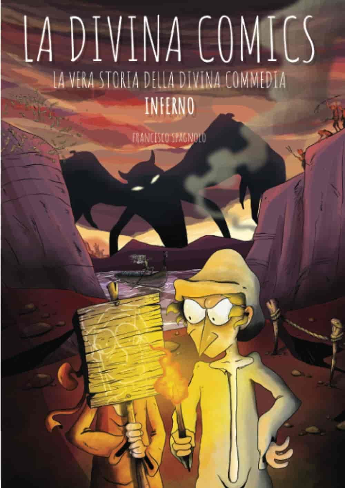
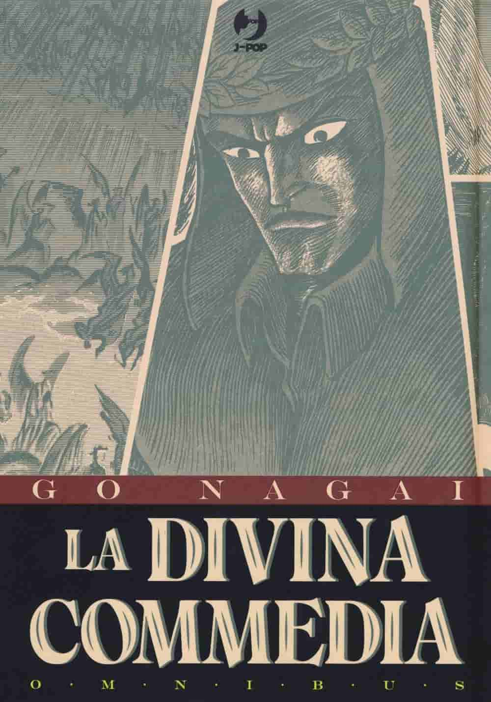
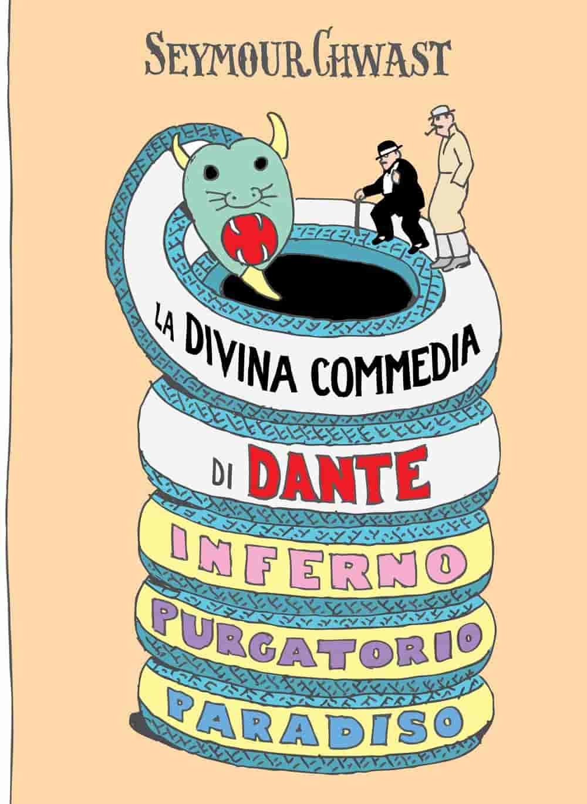
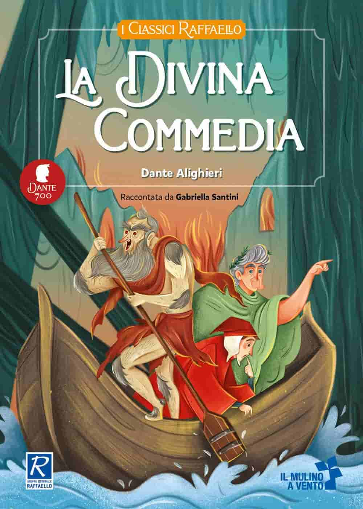

Fumetti e libri illustrati sulla Divina Commedia

Dante per bambini: L'Inferno raccontato ai più piccoli
Avvicinare i bambini a un pilastro della letteratura mondiale non è mai stato così semplice e divertente. Dante per Bambini trasforma l'oscuro viaggio nell'Inferno in un’avventura solare e accessibile, ideale per lettori dai 6 anni in su. Il libro si struttura attraverso 33 storie, ciascuna dedicata a personaggi iconici come il traghettatore Caronte, i coraggiosi Ulisse e Virgilio, o il mostruoso Cerbero. Ogni racconto occupa due pagine: la prima presenta il protagonista o il luogo del cerchio infernale, mentre la seconda approfondisce curiosità e spunti di riflessione moderni, rendendo il messaggio di Dante incredibilmente attuale anche per le nuove generazioni. Il vero valore aggiunto è l’apparato visivo curato da Silvia Baroncelli, che accompagna ogni tappa con splendide tavole a colori. Ma il coinvolgimento non si ferma alla lettura: al termine di ogni storia, i piccoli artisti troveranno un disegno da colorare, trasformando il libro in un’esperienza creativa e interattiva che aiuta a fissare i ricordi del viaggio. Che sia per un primo approccio scolastico o per una lettura della buonanotte fuori dal comune, questo volume riesce a mantenere intatto il fascino della Divina Commedia offrendo, allo stesso tempo, un passatempo rilassante e stimolante per tutta la famiglia.
Vedi su Amazon
La Divina Commedia a fumetti di Marcello Toninelli
Se cercate un modo per esplorare l’aldilà dantesco senza rinunciare a un sorriso, la "divina parodia" di Marcello Toninelli è un classico imprescindibile. Con il suo tratto pulito e inconfondibile, l'autore rilegge le tre cantiche — Inferno, Purgatorio e Paradiso — trasformando il solenne viaggio del Sommo Poeta in una sequenza di strisce umoristiche travolgenti. Il pregio principale di quest'opera è la capacità di restare fedele alla struttura dell’originale pur inserendo invenzioni bizzarre e fulminanti riferimenti all'attualità, rendendo Dante un personaggio incredibilmente umano e vicino a noi. Il volume non si limita però alle sole vignette: è una vera e propria guida completa all'universo del poeta. Al suo interno troverete infatti La vita di Dante a fumetti, l'albero genealogico della famiglia Alighieri e un utilissimo dizionario illustrato dei personaggi, strumenti preziosi che permettono a studenti e appassionati di orientarsi con facilità tra le fitte trame del poema. È un’opera d’intelligenza rara che, grazie a una satira mai banale, riesce nel difficile compito di istruire divertendo, confermandosi ancora oggi come una delle porte d'accesso più amate e intelligenti per scoprire (o riscoprire) il genio di Dante.
Vedi su Amazon
La Divina Comics: Una rivoluzionaria novità tra i fumetti danteschi
Se pensate di conoscere già tutto del viaggio nell'oltretomba, preparatevi a ricredervi: "La Divina Comics: La vera storia della Divina Commedia a fumetti" di Francesco Spagnolo è la novità editoriale che sta conquistando lettori e critica. Si posiziona di diritto tra le migliori uscite recenti dedicate al capolavoro di Dante, offrendo una versione dell’Inferno (e non solo) assolutamente inedita e sorprendente. Pur rispettando fedelmente l’impianto originale e attraversando tutti i trentaquattro Canti della prima cantica, l’opera gioca con il concetto che "nulla è come sembra", ribaltando prospettive e aspettative con un colpo di scena dopo l'altro. La forza di questo fumetto risiede nel perfetto equilibrio tra rigore letterario e ironia travolgente. L’autore riesce a far convivere mostri mitologici, poeti antichi e personaggi storici in un contesto narrativo che rende la lettura fluida, interessante e ricca di risate. Non è solo una parodia, ma una rilettura intelligente che trasforma il testo scolastico in un’esperienza d’intrattenimento moderna e appassionante. Per chiunque cerchi un approccio fresco, divertente e visivamente accattivante alla Divina Commedia, questo titolo rappresenta oggi un acquisto obbligatorio, capace di unire il fascino del classico alla dinamicità della nona arte.
Disponibile anche il Purgatorio e il Paradiso
Vedi su Amazon
La Divina Commedia di Go Nagai
Per chi cerca un’esperienza visiva potente e dinamica, l’edizione Omnibus della Divina Commedia in versione Manga è un pezzo da collezione assolutamente immancabile. Questa opera sposta i confini della narrazione tradizionale, fondendo l'epica del Sommo Poeta con l'estetica e il ritmo incalzante tipico del fumetto giapponese. Attraverso tavole caratterizzate da forti contrasti di chiaroscuro e inquadrature drammatiche, il viaggio di Dante tra Inferno, Purgatorio e Paradiso acquista una nuova, vibrante energia, capace di catturare l'attenzione anche dei lettori più giovani o di chi è abituato a linguaggi narrativi moderni e veloci. Il formato Omnibus raccoglie l'intera opera in un volume corposo e curatissimo, permettendo di godersi il pellegrinaggio ultraterreno senza interruzioni. Nonostante la reinterpretazione stilistica, l'essenza del testo originale rimane intatta, con i personaggi e i mostri mitologici che assumono sembianze iconiche tipiche dei seinen più maturi. È un’opera che dimostra l’immortalità di Dante: un incontro perfetto tra cultura occidentale e arte orientale che trasforma il poema in una sorta di "dark fantasy" filosofico. Un titolo consigliatissimo per chi vuole vedere la selva oscura sotto una luce completamente nuova e decisamente audace.
Vedi su Amazon
La Divina Commedia di Seymour Chwast: Dante in salsa Noir
Se pensate che l'iconografia dantesca sia fatta solo di toghe rosse e corone d'alloro, la versione di Seymour Chwast vi lascerà letteralmente a bocca aperta. Il leggendario grafico e illustratore americano, co-fondatore dei Push Pin Studios, firma una delle reinterpretazioni più audaci, spiazzanti e stilose mai realizzate. In questo volume, Dante si trasforma in un detective uscito da un romanzo di Raymond Chandler, con tanto di impermeabile, cappello e pipa, mentre Virgilio lo scorta con impeccabile eleganza in completo nero e bombetta. Persino Beatrice subisce un restyling iconico, apparendo con un moderno e magnetico caschetto biondo platino. Nonostante l'estetica rivoluzionaria che strizza l'occhio al genere noir e alla pop-art, l'opera rimane sorprendentemente fedele al testo e alla struttura del poema. Attraverso illustrazioni dal tratto netto e soluzioni visive d’avanguardia, Chwast guida il lettore tra peccatori e santi, rendendo le punizioni infernali e le gioie del paradiso visivamente fresche e ironiche. È un’opera d’arte prima ancora che un fumetto, un pezzo da collezione consigliato a chi ama il grande design e vuole riscoprire il viaggio ultraterreno attraverso una lente eccentrica, colta e profondamente originale. Una lettura che dimostra come il genio di Dante possa abitare anche nei vicoli di una metropoli immaginaria.
Vedi su Amazon
La Divina Commedia di Gabriella Santini: Un ponte tra poesia e ragazzi
L’adattamento curato da Gabriella Santini rappresenta una risorsa preziosa per introdurre i giovani lettori, dai 9 anni in su, alla complessità del capolavoro dantesco senza intimidirli. La forza di questo volume risiede nel sapiente equilibrio tra una parafrasi chiara e l’inserimento mirato dei brani poetici originali, permettendo ai ragazzi di assaporare la musicalità dei versi di Dante pur comprendendone appieno il significato. Il testo è arricchito da utilissime schede-personaggio che aiutano a memorizzare i protagonisti incontrati durante il viaggio e da una puntuale segnalazione delle frasi celebri e dei termini più originali coniati dal Sommo Poeta. Non si tratta di una semplice semplificazione, ma di un’opera che punta a rendere Dante fruibile e amabile, trasformando lo studio della Commedia in un’esperienza coinvolgente e appassionante. Grazie a una struttura didattica moderna e a un linguaggio vicino alla sensibilità dei giovanissimi, il libro riesce a trasmettere il fascino dell’Inferno, del Purgatorio e del Paradiso in modo stimolante e accessibile. È la scelta ideale per insegnanti e genitori che desiderano offrire ai propri figli un primo incontro con la letteratura classica che sia, allo stesso tempo, educativo e profondamente divertente.
Vedi su AmazonL'Inferno spiegato male di Francesco Muzzopappa
Non lasciatevi ingannare dal titolo: L'Inferno spiegato male è in realtà uno dei modi più brillanti, accurati e originali per far scoprire la prima cantica ai ragazzi dagli 11 anni in su. Francesco Muzzopappa, con il suo inconfondibile stile ironico, abbatte il muro della noia scolastica trasformando il viaggio di Dante in un'esperienza ricca di umorismo a go-go e risate. Nonostante il tono scanzonato, l'opera non rinuncia alla precisione: il testo è infatti arricchito da preziosi specchietti informativi che approfondiscono i passaggi più complessi e i contesti storici del poema. È la lettura perfetta per chi vuole approcciarsi alla Divina Commedia con leggerezza, senza però perdere di vista il valore culturale dell'opera originale. Tra situazioni paradossali e battute fulminanti, i lettori si ritroveranno a conoscere i gironi infernali e i loro famigerati abitanti quasi senza accorgersene, rendendo lo studio un vero piacere. Che si tratti di un regalo per un giovane studente o di una lettura curiosa per un adulto, questo libro dimostra che si può fare divulgazione di qualità anche ridendo a crepapelle.
Vedi su Amazon